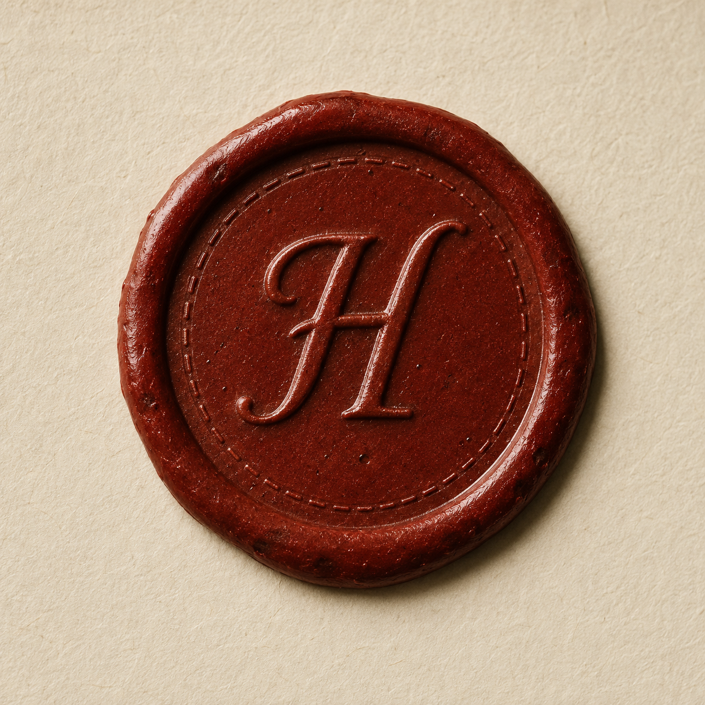

An archive, not a presence.
Heirloom is a held space. The product never simulates the creator as still here — it carries what they chose to leave. The visual system is warm paper, hand-set type, and the quiet weight of a thing kept on purpose.
- — Slow before fast. Quiet before clever.
- — Voice as material, not as a feature.
- — No mascots. No sparkles. No séance.
- — Recording, never live. Always indicated.
- — Demographically open. Never age-coded.
The mark is a sealed letter that hasn't been opened yet.
A serif H pressed into warm wax — the metaphor the whole product borrows from. Use the seal as the standalone mark; pair it with the wordmark for headers and exports.

Bone, ivory, parchment — and wax, where it matters.
Backgrounds are subtly-toned whites with low chroma. Inks are warm near-blacks. A single ceremonial accent (oxblood / wax) is reserved for thresholds: recording, designating, releasing. Candle-amber carries warmth without sweetness.
- — Wax appears at most once per screen. Never as a button color for routine actions.
- — Candle warms imagery and timestamps. Never used as primary action color.
- — No gradients except the seal itself and one Ken-Burns light wash on memory imagery.
- — Saturation ceiling for whites: chroma ≤ 0.02 (oklch). Backgrounds are paper, not cream-cake.
- — Pure black is forbidden. Use deep ink.
Newsreader carries the voice. Geist holds the chrome.
A transitional serif with a working italic does the intimate, literary work: prompts, quotes, the names of the people being remembered. A humanist sans handles UI, buttons, fields — so the system never feels antique. Monospace is used sparingly, for timestamps and provenance only.
Paper resting on paper.
Memory cards
Recorder & capture
Nominees · designation
Thin line. Single weight. Drawn like a pen on paper.
A minimal custom set. 1.2px stroke, rounded caps. Built from arcs and lines — never filled. Avoids the Lucide-default look by sitting on a 20-unit grid and keeping shapes asymmetric where the world is asymmetric (the letter, the leaf, the thread).
Quiet by default. Ceremonial at thresholds.
Routine motion is barely there — fades, soft slides, subtle Ken-Burns on imagery. Three moments earn full cinematic weight: the first capture, the mode switch, and the nominee's first opening.
- --dur-quick · 240ms · routine
- --dur-calm · 520ms · transitions
- --dur-cinema · 1100ms · thresholds
- --ease-paper · (.22,.61,.36,1)
- --ease-fold · (.55,.05,.25,1)
- — Bouncing springs
- — Particle / orb backgrounds
- — Pulsing avatars
- — Typewriter effects for the creator's own voice
We speak softly, like a librarian who knows you.
First-person we, never I. We never personify the creator, and we never speak in their voice. Prompts ask, they don't direct. Errors apologize without flourish. We say released, not unlocked; held, not queued; opened, not viewed.
Do · prompts
“Tell me about a morning that felt ordinary, but you'd like to remember.”
Don't · prompts
“Generate a memory for your daughter ✨”
Do · empty states
“Nothing yet. Heirloom is patient.”
Don't · empty states
“Get started by adding your first memory!”
Do · handoff
“Held for Maren — to be opened on her eighteenth birthday.”
Don't · handoff
“Scheduled delivery: 06 May 2033, 09:00 UTC”
Do · errors
“Heirloom couldn't save that. We're sorry. The recording is still on your device.”
Don't · errors
“Error 503 — please retry.”
held · released · opened · sealed · kept · carried · with · for · alongside · in your own time · whenever you're ready · we'll wait
deceased · passed · gone · loss · countdown · queue · publish · ✨ · 🔒 · streak · level up · share · post · feed
We always use the names the creator gave us — never pronouns alone. If we don't know a name, we ask. If asking would intrude, we wait.
Atmospheric, not stock-people.
No fake families. No diverse-faces-stock-photo collage. Imagery is atmospheric — a window, a hand, a back of a head, a kitchen at the end of the day. We will commission or curate. Until then, the system uses placeholders that look like reserved space, not filler.
Show the full age range. A thirty-year-old recording at a kitchen table. A parent in their forties on a porch. A grandparent at a sewing machine. Never default to "an elder." Heirloom is not an aging-services product, and the imagery must not suggest it is.
Local-first, visibly so.
Heirloom shows where your recording lives. Every capture surface carries a Local only indicator. Cloud sync, if enabled, is described in the present tense and can be turned off at any moment without orphaning anything.
“Your recordings are on this device. Heirloom does not see them. If you'd like, we can keep an encrypted copy on a second device of your choosing.”
Any nominee can be unbound. Any voice clone can be revoked. Any released memory can be re-sealed. Heirloom never makes any of this irreversible.
Five files where the system meets a finger.
The tokens, components, and voice above all resolve here — in mobile-shaped flows you can walk through with arrow keys. These are the visual source of truth: when this document and a prototype disagree, the prototype wins.
Capture modes — bottom-sheet pattern
Four capture kinds, one shell. Each sheet shares: handle · italic-serif title · one line of editorial guidance · mode-specific body · two-action save row (Save later · Save to vault).
Executor — v1 simplification
Step 3 of the prototype becomes a single oxblood passphrase block (willow · bread · river · 14) with Regenerate and Copy. Step 4 letter preview is preserved — only the "your share of the key" line becomes "your passphrase". The full split flow remains documented as the v2 narrative.